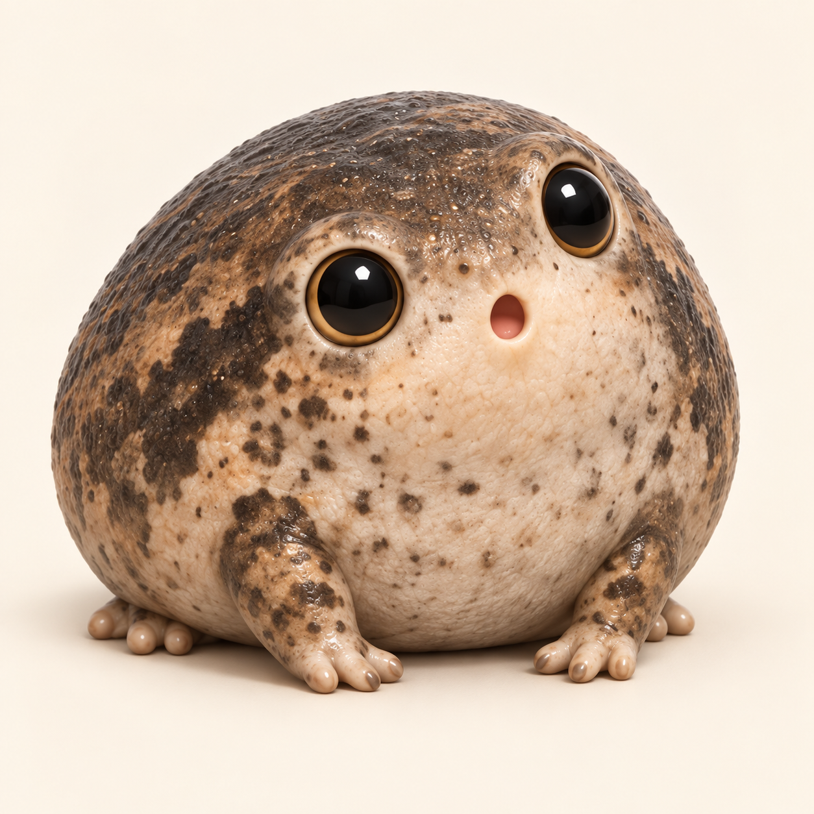

캐릭터 기준 그림과 첫 입체 시제품
7번 맹꽁이 비교하기
이 그림은 셀카 캐릭터 제작용입니다. 전시장에서 카메라가 인식할 표식과는 별개예요.
캐릭터 기준 그림 · 한복 없는 7번

그림의 발은 정확한 해부학 기준이 아닙니다. 3D에서는 앞발 4개·뒷발 5개 발가락과 뒷발의 부분 물갈퀴를 반영합니다.
아래에서 3D를 돌려보세요
손가락으로 회전 · 두 손가락으로 확대·축소
맹꽁이: 앞발마다 발가락 4개 · 뒷발마다 5개 · 뒷발의 부분 물갈퀴.
이 모델은 직접 구성한 형태 시제품입니다. 선택한 7번 이미지의 최종 3D 재현본이나 실제 개체 스캔 자료가 아닙니다. 색·비율·발 모양 등은 생태 검수와 조형 보정이 필요합니다.